Los Belmont + Otros Protagonistas (Serie Canónica)
Leon Belmont
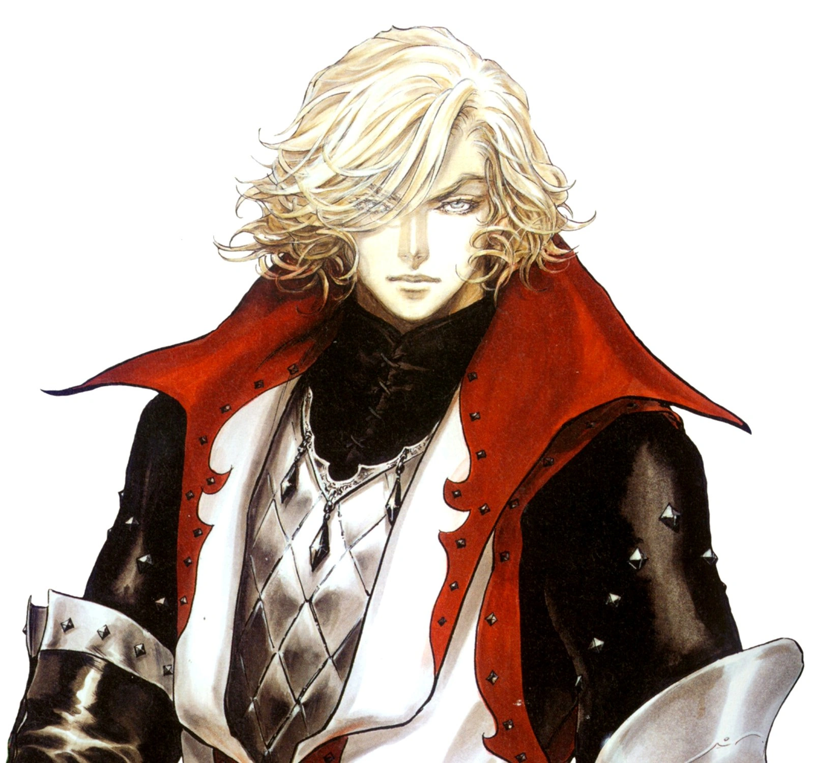
El patriarca que dio origen a la leyenda en el siglo XI. Antiguo caballero de las cruzadas, Leon renunció a su título y honor para rescatar a su prometida de las garras del vampiro Walter Bernhard. Su sacrificio personal y el alma de su amada dieron forma al "Vampire Killer", el látigo sagrado que juró que su linaje usaría para erradicar el mal de la tierra por toda la eternidad.
Trevor Belmont
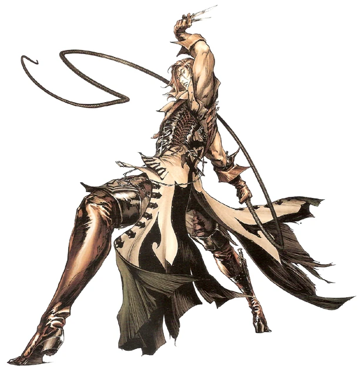
El primer Belmont en enfrentarse y derrotar directamente al Conde Drácula en el siglo XV. Siendo un paria exiliado por el miedo de la gente hacia sus poderes, Trevor unió fuerzas con Sypha, Alucard y Grant para salvar a Valaquia de la aniquilación total. Su victoria no solo restauró el honor de su apellido, sino que consolidó la reputación de los Belmont como los protectores definitivos de la humanidad.
Alucard (Adrian Tepes)
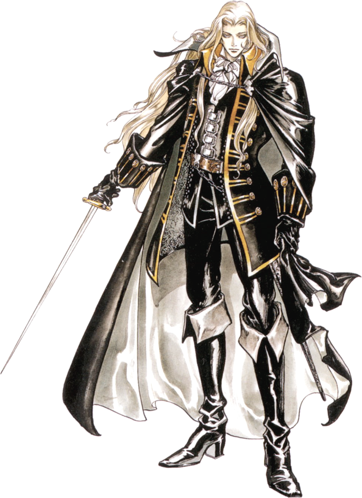
El hijo dhampiro de Drácula y la humana Lisa. Atrapado entre su herencia inmortal y su amor por los humanos, Alucard lucha eternamente contra su propio padre para honrar los deseos de paz de su madre. Con su maestría en la esgrima y sus poderes de transformación en lobo, murciélago y niebla, ha sido el aliado más constante de la familia Belmont a lo largo de los siglos.
Héctor
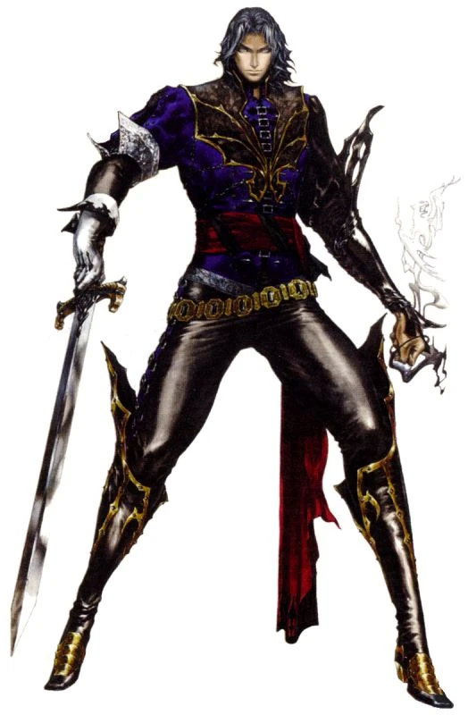
Un antiguo Forjador de Almas que traicionó a Drácula en busca de una vida tranquila. Sin embargo, tras el asesinato de su amada Rosaly por culpa de la conspiración de su rival Isaac, Héctor se ve obligado a retomar su oscuro poder. En su viaje de redención, utiliza a sus "Inocentes Diablos" para detener la maldición que asolaba Europa, demostrando que incluso alguien nacido de la oscuridad puede elegir el camino del bien.
Christopher Belmont
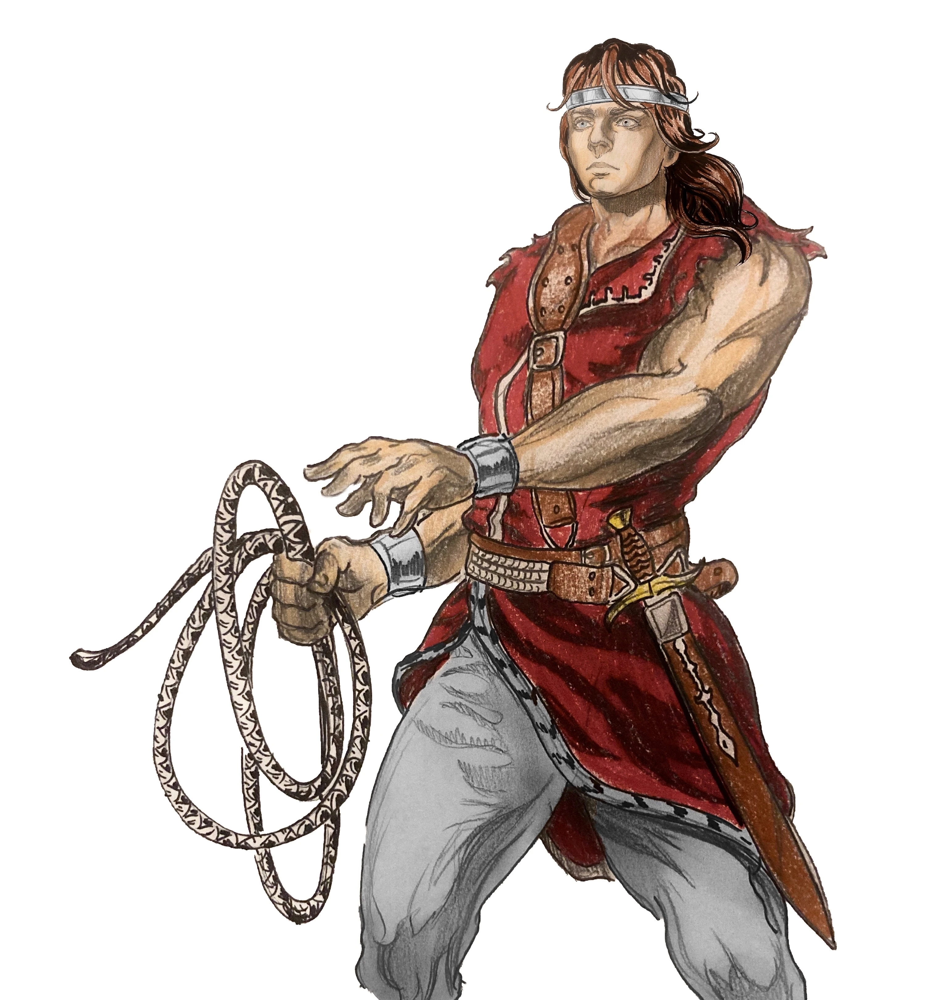
Un guerrero de una fuerza física inigualable en el siglo XVI. Christopher fue capaz de derrotar a Drácula en una batalla feroz y, quince años después, se enfrentó al reto más difícil de su vida: rescatar a su propio hijo de la influencia oscura del Conde. Su tenacidad demostró que el poder de un Belmont no solo reside en su brazo, sino en la inquebrantable voluntad de proteger a su familia.
Soleiyu Belmont
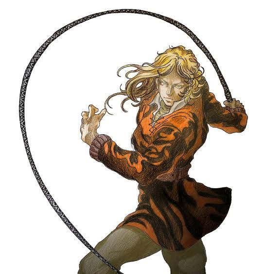
Hijo de Christopher y heredero del látigo sagrado. Durante su ceremonia de mayoría de edad, fue secuestrado por el espíritu de Drácula para servir como recipiente de su poder. Tras ser derrotado y liberado por su padre, Soleiyu recuperó su humanidad y continuó el legado familiar, dejando claro que el vínculo de sangre de los Belmont es capaz de resistir incluso la posesión más oscura.
Simon Belmont
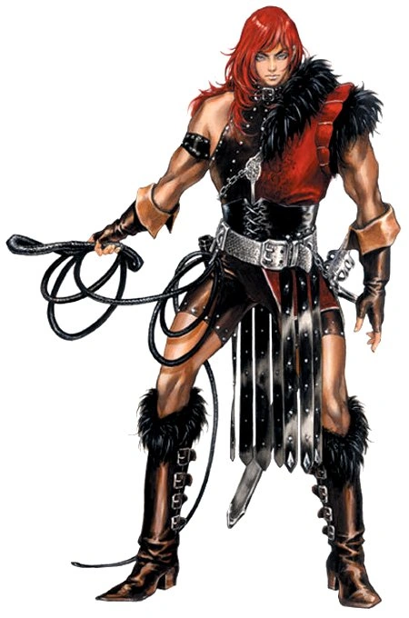
Probablemente el cazador más icónico de la historia. Simon no solo destruyó el castillo de Drácula, sino que debió enfrentarse a una maldición mortal que consumía su cuerpo. Para salvarse, tuvo que reunir las reliquias del propio Conde y resucitarlo solo para destruirlo una vez más. Su valentía solitaria y su victoria contra todo pronóstico lo convirtieron en la referencia absoluta para todos los cazadores posteriores.
Juste Belmont
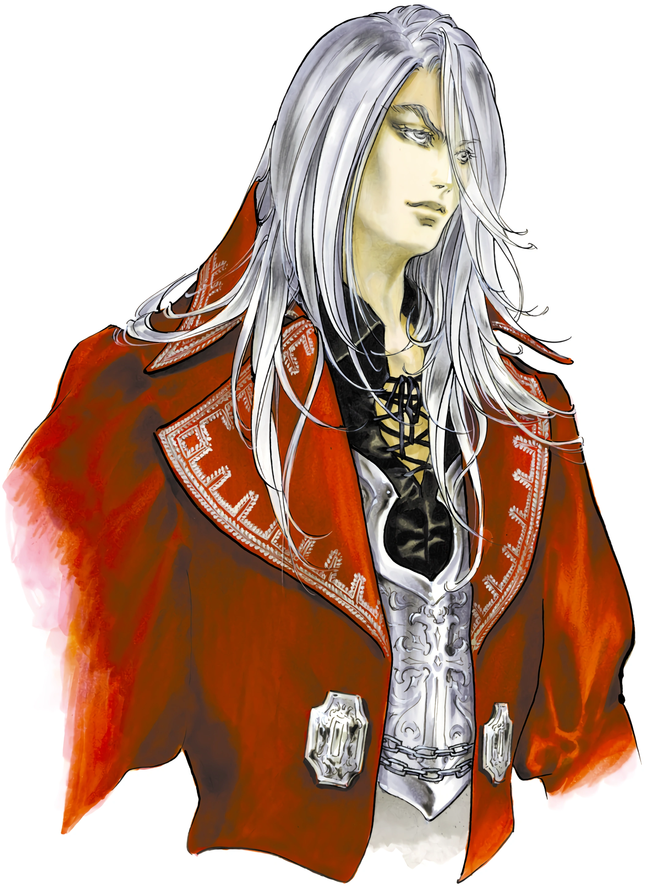
Un prodigio que heredó no solo la fuerza de los Belmont, sino el inmenso poder mágico del linaje Belnades. En el siglo XVIII, Juste utilizó una combinación devastadora de látigo y hechizos elementales para navegar por un castillo dividido en dos dimensiones paralelas. Su agilidad y control sobre la magia sagrada lo sitúan como uno de los miembros más talentosos y versátiles que el clan ha visto jamás.
Richter Belmont
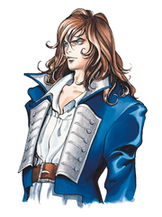
Reconocido como uno de los portadores más poderosos del Vampire Killer. Tras una victoria legendaria en el siglo XVIII, Richter cayó bajo el control mental de fuerzas oscuras, lo que provocó que el látigo sagrado tuviera que ser entregado a la familia Morris por seguridad. Su historia es un recordatorio de que incluso el guerrero más fuerte puede ser vulnerable a las sombras, pero también de la importancia de la redención.
Shanoa
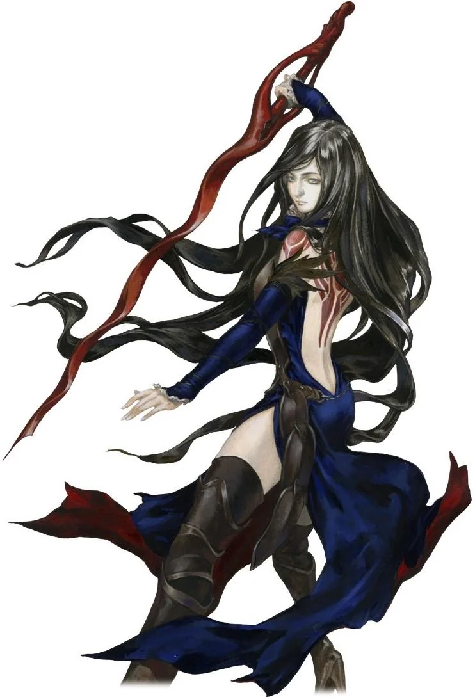
Una guerrera de la Orden de Ecclesia que perdió sus recuerdos y emociones en un ritual para portar el "Dominus", el poder definitivo. En una época donde los Belmont habían desaparecido, Shanoa cargó con el destino del mundo sobre sus hombros, utilizando glifos mágicos tatuados en su piel para combatir. Su sacrificio final y su lucha solitaria la convierten en una de las heroínas más trágicas y poderosas de la saga.
John Morris
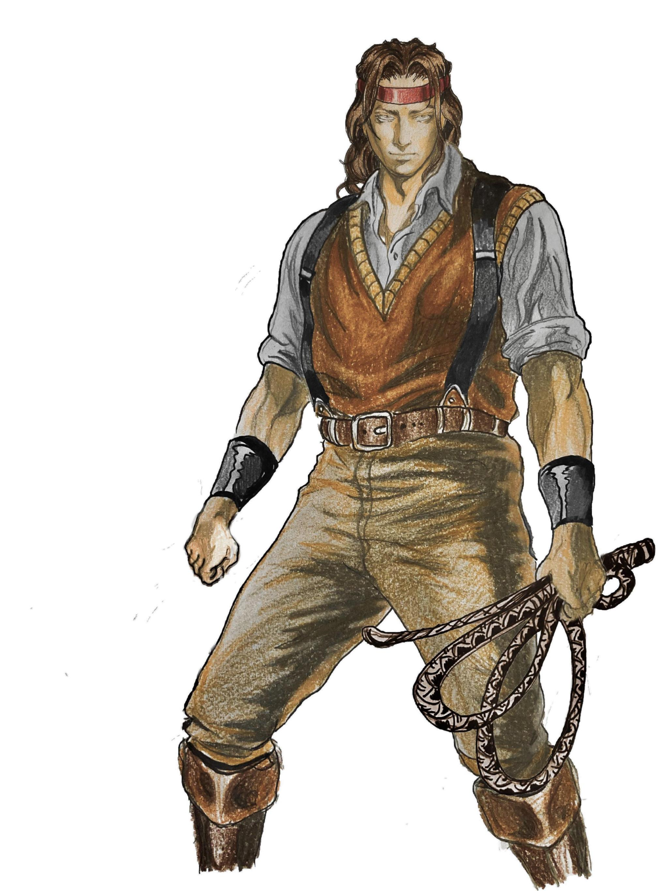
Descendiente de la familia Morris que portó el Vampire Killer durante los horrores de la Primera Guerra Mundial. Al no ser un Belmont de sangre pura, el uso del látigo sagrado drenaba su energía vital cada vez que lo utilizaba. A pesar de saber que el arma lo estaba matando lentamente, John no dudó en sacrificar su propia vida para detener la resurrección de Drácula y proteger al mundo del mal emergente.
Jonathan Morris
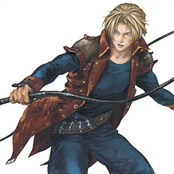
Hijo de John, Jonathan tuvo que aprender a superar el resentimiento hacia su padre para desbloquear el verdadero poder del látigo. Durante la Segunda Guerra Mundial, y con la ayuda de Charlotte, demostró que la fuerza de un cazador no depende solo de su linaje, sino de los lazos que forma y de su capacidad para trabajar en equipo. Fue el hombre que finalmente devolvió el Vampire Killer a su máxima gloria.
Charlotte Aulin
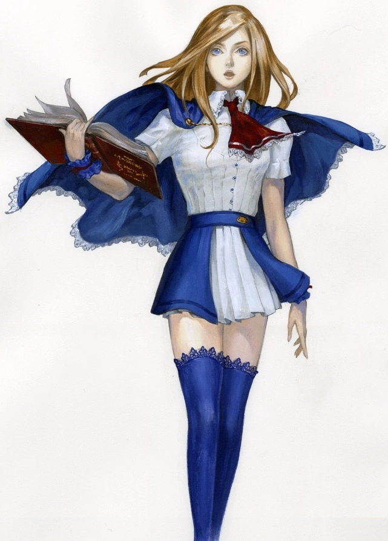
Una bruja prodigio con un intelecto asombroso y un dominio magistral de los libros de hechizos. Charlotte fue la compañera indispensable de Jonathan, aportando el conocimiento mágico necesario para purificar las pinturas malditas que sostenían el poder del castillo. Su presencia demuestra que la sabiduría y la magia son tan cruciales para derrotar a la oscuridad como la fuerza física del látigo.
Julius Belmont
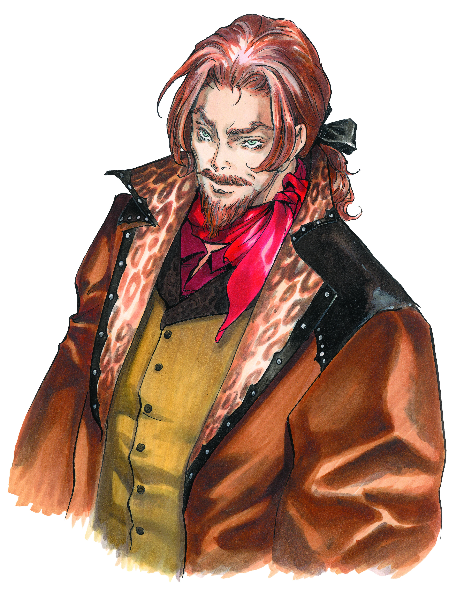
El hombre que cumplió la profecía definitiva en el año 1999. Julius lideró el asalto final que destruyó a Drácula para siempre y selló su castillo dentro de un eclipse solar. Considerado el Belmont más poderoso de todos los tiempos, su fuerza era tan inmensa que logró lo que nadie más pudo en mil años: poner fin al ciclo eterno de resurrección del Señor Oscuro, aunque a costa de perder su memoria durante décadas.
Soma Cruz
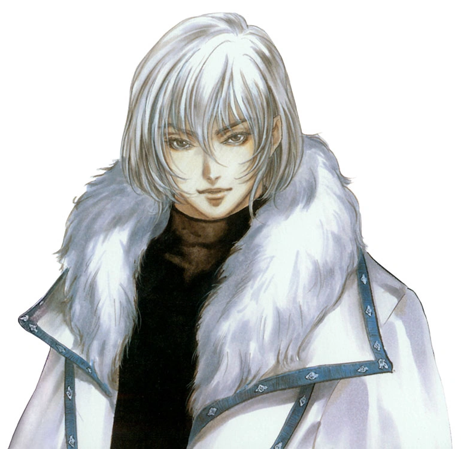
Un joven estudiante que en el año 2035 descubre la aterradora verdad: él es la reencarnación del alma de Drácula. Soma posee el "Poder de Dominación", que le permite absorber las almas de sus enemigos para usar sus habilidades. A pesar de tener la oscuridad en su interior, Soma lucha cada día para demostrar que el destino no está escrito y que su alma humana es más fuerte que la malicia del antiguo Conde.
Universo Alternativo (Líneas no Canónicas)
Sonia Belmont
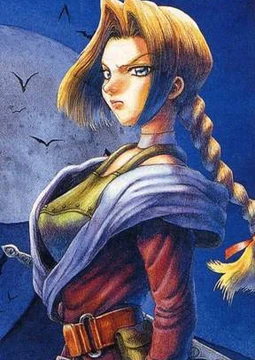
En esta línea temporal, Sonia fue la primera mujer del clan en alzarse contra la oscuridad. Con una conexión espiritual única que le permitía invocar las almas de los santos, ella sentó las bases de lo que significaría ser un Belmont. Su historia narra el origen de la disputa familiar contra el Conde desde una perspectiva llena de coraje y misticismo.
Cornell
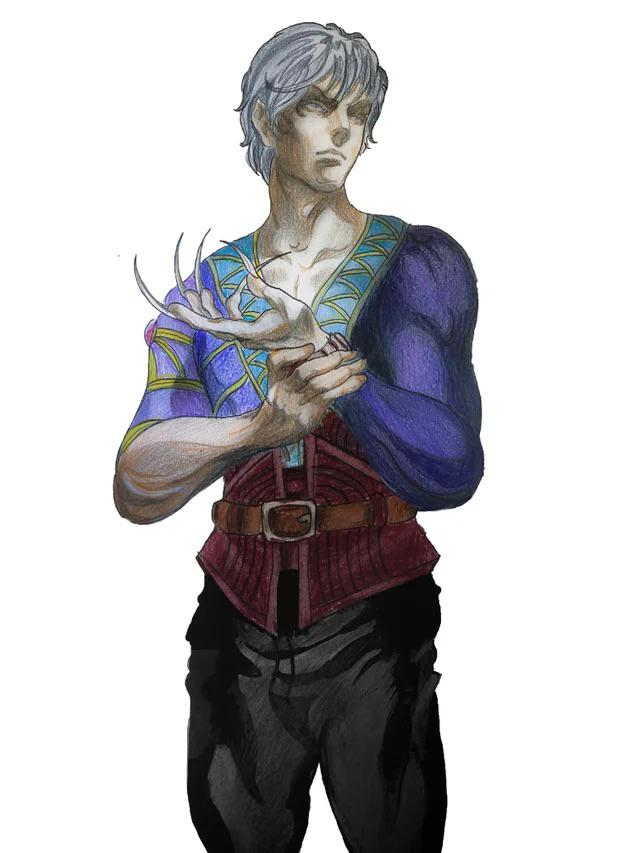
Un guerrero hombre lobo que posee un control sobrehumano sobre su propia bestialidad. Cornell se adentró en el castillo para salvar a su pequeña hermana de ser sacrificada por los sirvientes de Drácula. Su estilo de combate, basado en ráfagas de energía y fuerza bruta licántropa, ofrece una visión distinta de los héroes que han desafiado el poder de las tinieblas.
Reinhardt Schneider
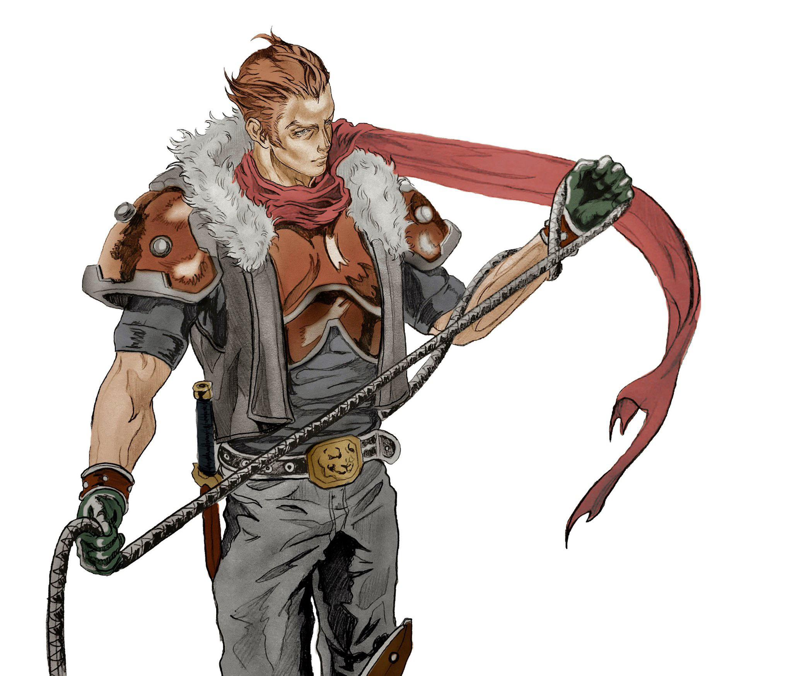
Un joven caballero con sangre Belmont que fluye por sus venas, encargado de empuñar el látigo sagrado en el siglo XIX. Su fe inquebrantable y su sentido del deber lo guiaron a través de una de las encarnaciones más retorcidas del castillo. Reinhardt representa la perseverancia de la sangre sagrada, incluso en ramas familiares que han cambiado de nombre con el paso de las generaciones.
Nathan Graves
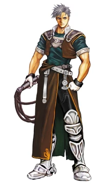
Un cazador entrenado por el maestro Morris Baldwin en una época donde los Belmont estaban ausentes. Nathan utiliza el Látigo de la Memoria y un sistema único de cartas mágicas (DSS) para combinar elementos y habilidades divinas. Su lucha en el castillo de la Luna demuestra que el deber de proteger al mundo puede recaer en hombros ajenos al linaje principal si el corazón es puro.
Línea Temporal: Lords of Shadow
Gabriel Belmont
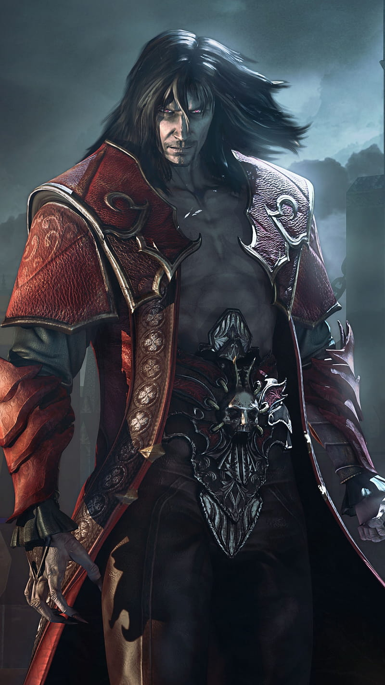
Un guerrero santo cuya búsqueda desesperada por devolverle la vida a su esposa lo llevó por un camino de oscuridad y desesperación. Tras derrotar a los Señores de la Sombra y ser traicionado por las fuerzas de la luz, Gabriel se convirtió en Drácula, un ser inmortal destinado a observar el paso de los siglos mientras espera el momento de su redención o su final definitivo.
Alucard (Trevor Belmont)
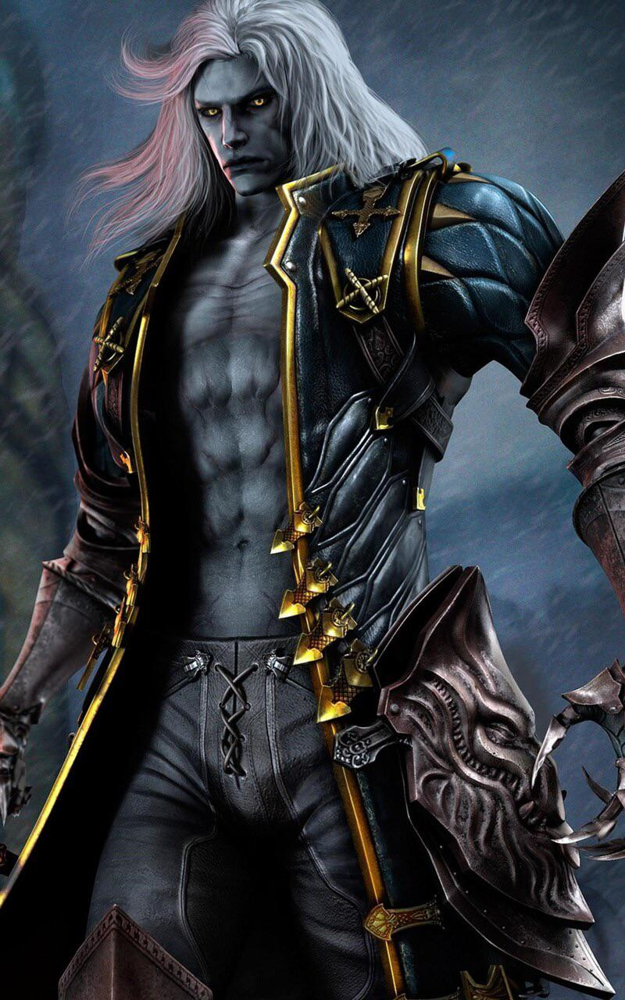
En este universo, Trevor es el hijo de Gabriel que intentó detener la locura de su padre. Tras caer en combate, Gabriel lo transformó en vampiro en un intento desesperado por no perderlo. Renacido como Alucard, el caballero oscuro pasa siglos conspirando y preparando el terreno para ayudar a su linaje a terminar con la maldición que ha perseguido a los Belmont desde el principio.
Simon Belmont
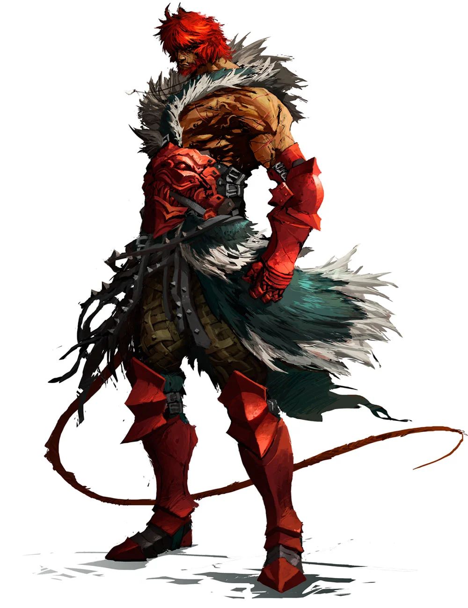
Nieto de Gabriel y superviviente de la tragedia familiar. Criado por tribus de las montañas, Simon creció como un guerrero bárbaro con un único objetivo: entrar en el castillo y vengar la muerte de sus padres. Armado con la cruz de combate de su padre y una voluntad de hierro, Simon ignora que el monstruo al que persigue es en realidad su propio abuelo.
Victor Belmont
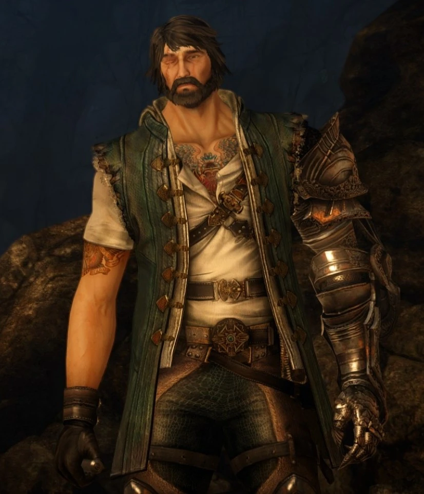
El último de los Belmont en un futuro moderno y post-apocalíptico. Como líder de la resistencia contra las fuerzas de Satán, Victor porta un fragmento del látigo sagrado y la pesada carga de ser el último de una estirpe de héroes. Su encuentro con Drácula pone a prueba su fe y su valor en el clímax de una guerra que ha durado milenios.